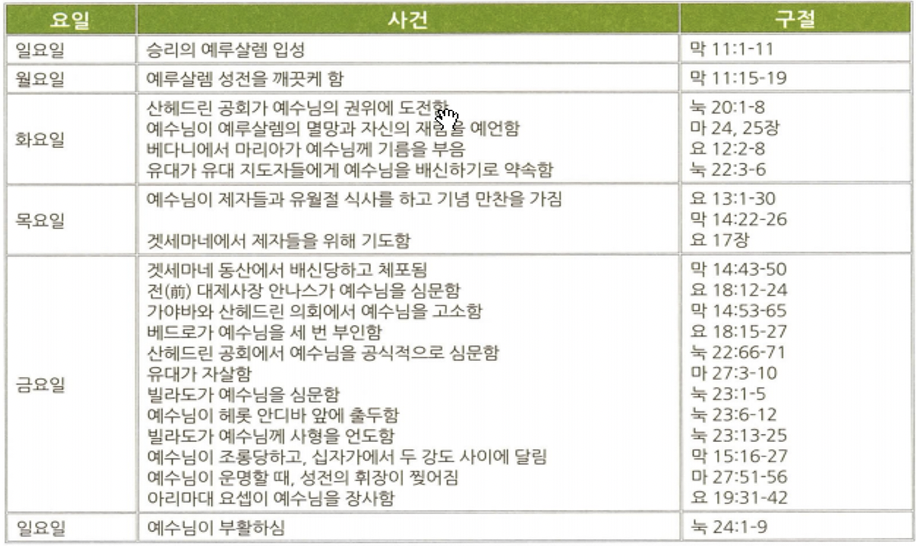

<!doctype html>
<html>
    <head>
        <meta charset="UTF-8">
        <meta name = "viewport" content = "width = device-width, initial-scale=1.0">
        <title>CF1 마태복음</title>
        <link rel="stylesheet" type="text/css" href="../../../css/pages.css">
    </head>
</html>

<body>
    <header>
        <h3><a href = "../../../index.html">HAGUS <br> HARDWARE</a></h3> 
        <ul id="main_menu">
        </ul>

        <script src = "../../../MainMenu.js"></script>
    </header>

    <section class="section">
    <div id = "tag_menu">
    </div>

    <script src = "../../../TIL_tag_menu.js"></script>

    <div id = "tag_list">
        <div class="l_title"><a href = "../../../TIL.html">Class.</a></div><hr>
        <div class = "l_subtitle"><div class = "title"><a href = "../../../TIL.html"><strong>[CF1] 마태복음</div><div id="date">2021.06.08</div></strong></a></div>
             <!--====content====-->
        <div class = "content"> 
<pre>
<strong>왕</strong>으로 오신 예수 그리스도. 유대인을 위해 오신 메시야 예수

<span class = "h">핵심적인 사실</span>
저자: 마태
연대: 주후 50년대 (일부 학자들은 60년대 말)
집필장소: 알려지지 않음
수신: 유대인 크리스천과 청중/ 구약성경을 99회 인용
사용된 헬라어 단어: 18300여개(막 11300단어) / “왕”과 “나라”를 75회 사용함
목적: 예수님이 구약성경에 예언된 메시아임을 보여줌
주제: 예수님은 임마누엘, 메시아, 구세주
핵심요절: 마16:13-20


<span class = "h">마태복음 1장에 나오는 여인들</span>
<strong>다말</strong> : 야곱의 넷째 아들 유다의 며느리, 창녀로 위장하여 유다와 동침, 쌍둥이를 낳음
<strong>라합</strong> : 여리고에서 이스라엘 정탐꾼을 숨겨줌, 보아스의 어머니이자, 다윗의 고조모
<strong>룻</strong> : 모압여인으로 나오미의 아들인 말론의 아내, 베들레헴에서 보아스와 재혼
<strong>밧세바</strong> : 다윗이 간통한 후에, 부하장군 우리야를 죽게 하고 결혼한 여인(우리야의 부인), 솔로몬의 어머니
<strong>마리아</strong> : 처녀의 몸으로 예수님을 잉태함.


<span class = "h">핵심 구절 : 마16:13-17</span>
예수께서 빌립보 가이사랴 지방에 이르러 제자들에게 물어... 시몬 베드로가 대답하여 이르되 "주는 그리스도시요 살아 계신 하나님의 아들이시니이다."

"예수께서 대답하여 이르시되 “바요나 시몬아 네가 복이 있도다 이를 네게 알게 한 이는 혈육이 아니요 하늘에 계신 내 아버지시니라  또 내가 네게 이르노니 너는 베드로라 내가 이 반석 위에 내 교회를 세우리니 음부의 권세가 이기지 못하리라"


<span class = "h">공생애의 시작과 사역 (마4:17)</span>
1. 첫 메시지: “회개하라 천국이 가까이 왔느니라”
2. 삼중 사역: (마 4:23-24) 예수께서 온 갈릴리에 두루 다니사 그들의 회당에서 <strong>가르치시며</strong> 천국 복음을 <strong>전파하시며</strong> 백성 중의 모든 병과 모든 약한 것을 <strong>고치시니</strong> 그의 소문이 온 수리아에 퍼진지라 사람들이 모든 앓는 자 곧 각종 병에 걸려서 고통 당하는 자, 귀신 들린 자, 간질하는 자, 중풍병자들을 데려오니 그들을 고치시더라


<span class = "h">12제자들</span>
안드레 : 베드로의 형제, 어부,  세례요한의 제자 출신
야고보 : 요한의 형제, 우레의 아들, 어부출신 헤롯에게 순교당함
빌립 : 나다나엘을 인도, 사마리아에서 복음전파, 에디오피아 내시에게 전도함
바돌로매(나다나엘) : 무화과 나무아래 있던 경건한 유대인. 예수님을 하나님의 아들, 이스라엘의 왕으로 고백.
도마 : 의심많은 자. 부활하신 예수님을 나의 주로 고백
시몬 베드로 : 어부 출신, 사도중에서 핵심적 인물, 급하고 열정적 성격
알패오의 아들 야고보 : 마태의 형제?
다대오(야고보의 아들 유다) : 다른 유다로 기록됨
셀롯 시몬 : 원래 열심당원 출신, 천국을 전파하는 자가 됨
가롯 유다 : 돈궤를 맡은 자, 예수님을 배신하여 은 30에 판 후, 목매어 자살함
요한 : 어부 출신, 우레의 아들이라는 별명, 예수님의 사랑하는 제자로 불림
마태(레위) : 세리 출신, 알패오의 아들, 야고보의 형제?


<span class = "h">마태복음의 5대 강화</span>
1. 산상수훈(제자직에 대한 설교 5-7장 ) : 하나님 나라의 설립을 위한 비전
2. 12사도직에 대한 설교 : 복음을 전하라. 제자들은 박해를 받을 것임.
3. 천국에 대한 비유(13장) : 복음을 거부하는 자들과 악의 존재에 대한 설명, 하나님 나라는 역경 중에도 성장하며 천국사역은 계속된다.
4. 교회에 대한 비유(18장) : 예수님과 제자들, 제자들 상호관계 설명
5. 종말에 관한 감람산 강화(24-25장): 성전의 멸망, 재림 이전의 사건들 예언


<span class = "h">산상수훈</span>
1. 심령이 가난한 자-천국소유
2. 애통하는 자- 위로를 받음
3. 온유한 자 - 땅을 기업으로 받음
4. 의에 주리고 목마른 자- 배부를 것
5. 긍휼히 여기는 자- 긍휼히 여김을 받음
6. 마음이 청결한 자- 하나님을 볼 것
7. 화평하게 하는 자- 하나님의 아들이라 일컬어짐
8. 의를 위하여 박해를 받은 자- 천국소유

<span class = "h">천국비유</span>
1. 씨뿌리는 자의 비유
2. 가라지의 비유
3. 겨자씨의 비유
4. 밭에 감추인 보화의 비유


<span class = "h">공생애 마지막 일주일(고난주간)</span>



<span class = "h">마태복음의 신학적 주제</span>
1. 메시아 예언의 성취 
2. 율법의 완성자 
3. 다윗의 후손
4. 인자 
5. 대속의 제물 
6. 대위임 명령(이방인 선교)


<span class = "h">모든 권세, 대위임 명령</span>
1. 부활하신 이후에 모든 권세
(마 28:18) 예수께서 나아와 말씀하여 이르시되 하늘과 땅의 모든 권세를 내게 주셨으니

2. 대위임명령(for both 유대인 and 이방인)
(마 28:19-20) 그러므로 너희는 가서 모든 민족을 제자로 삼아 아버지와 아들과 성령의 이름으로 침례를 베풀고, 내가 너희에게 분부한 모든 것을 가르쳐 지키게 하라 볼지어다 내가 세상 끝날까지 너희와 항상 함께 있으리라 하시니라


</pre>  
    <br>
    <br>
    <br>
    </div> 

    </div>

</section>

    
</body>


